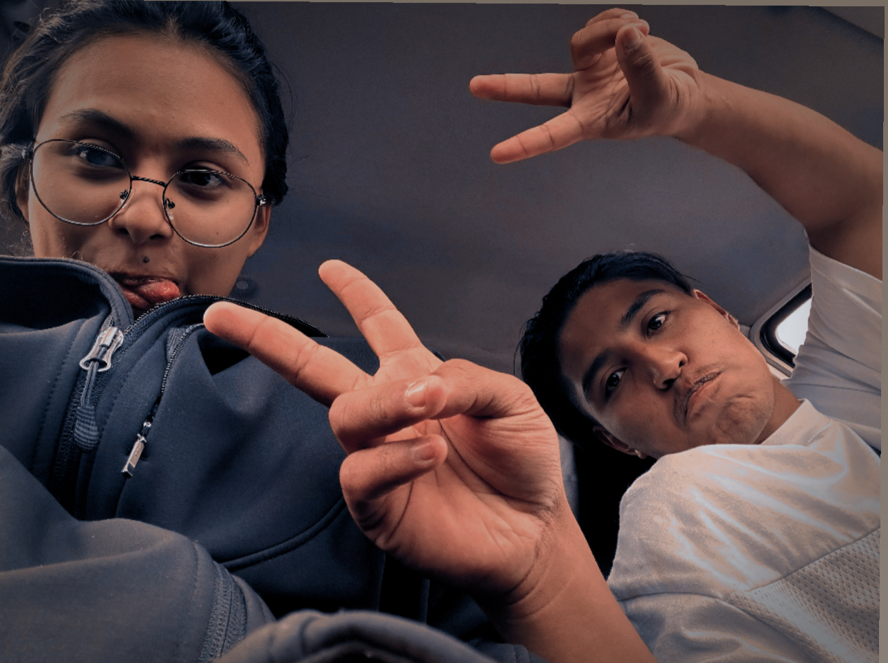
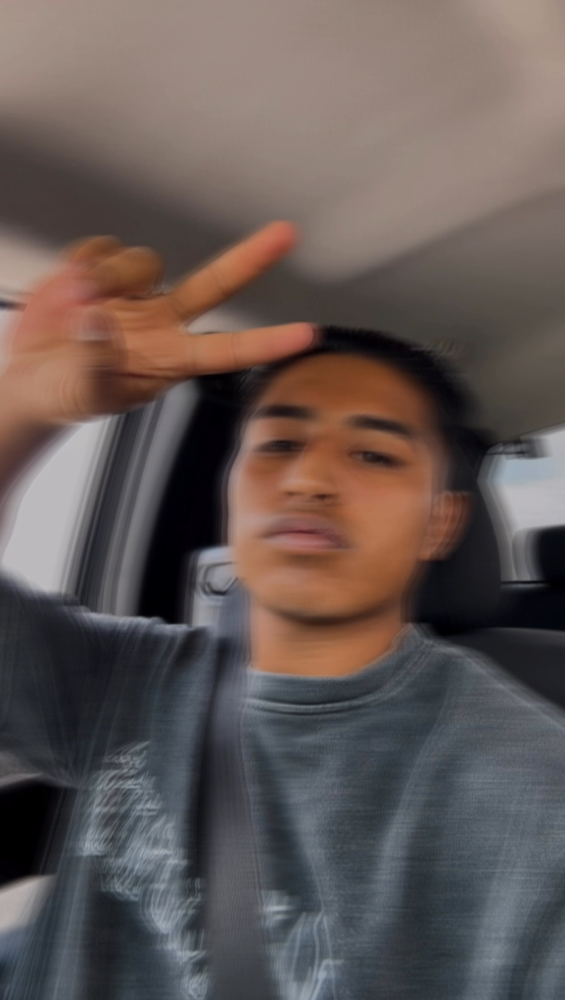

Pensé en muchas formas de presentarme, y al final decidí que lo mejor era mostrar quién soy a través de momentos reales. Esta página es un recorrido visual por mis experiencias, mis pasiones y mi estilo de vida. ¡Gracias por estar aquí!
Presentación Dany
Pues viajando a un lugar muy lejano... ese es Dany de niño. La verdad, no tengo mucha conciencia de mi infancia,
pero en términos generales nací el 5 de marzo de 2003 en Toluca de Lerdo.
Me encantan los gatos, y si se trata de rescatarlos, soy el primero en apuntarme.
Uno de mis sueños es tener un refugio donde puedan tener una vida digna,
junto con perritos que viven en la calle.
Disfruto mucho ir al mar y quedarme lejos de la orilla por largo tiempo.
Solo el mar y yo.
Mi lugar favorito es Tabasco Paylebot, donde el mar al que voy es el rincón más tranquilo.
En ese mar, no hay nadie más.
Otra cosa que me apasiona es manejar.
Ya sea en auto o en moto, soy feliz al volante.
Las carreteras amplias me fascinan.
Cuando uno va a más de 200 km/h, parece que flotamos...
claro, siempre con todas las precauciones.
Uno de mis hobbies son los tatuajes.
No tengo muchos, pero me encantan.
Acabo de comenzar a tatuar, y me relaja profundamente.
Ya tengo mi máquina y estoy en plena práctica.
Ella es Moka, una gatita que me hace feliz...
aunque a veces me rasguña.

Mi persona favorita es Vi. La conocí este año y le dio brillo a mi vida.
Me ayudó más de lo que ella puede imaginar.
Es alguien que quiero tener en mi vida para siempre.
Hace unos meses abrimos una taquería juntos, y ha sido una de las experiencias que marcarán mi historia.
Las palabras para Vi son más de las que podría decir en mil vidas.
Sin duda, es la persona que más agradezco haber conocido.

Estos son algunos momentos de mi vida. Faltan muchos más, pero esto sería infinito.
Mis metas están claras: quiero un futuro en paz.
Mis padres son un pilar fuerte, y estoy profundamente agradecido con ellos.
Me falta disciplina, pero es algo en lo que estoy trabajando.
Hasta ahora, todo va bien. No me puedo quejar, aunque sé que puede ser mejor.
Y esto es un poco de mí. Espero que sea de su agrado. Gracias.